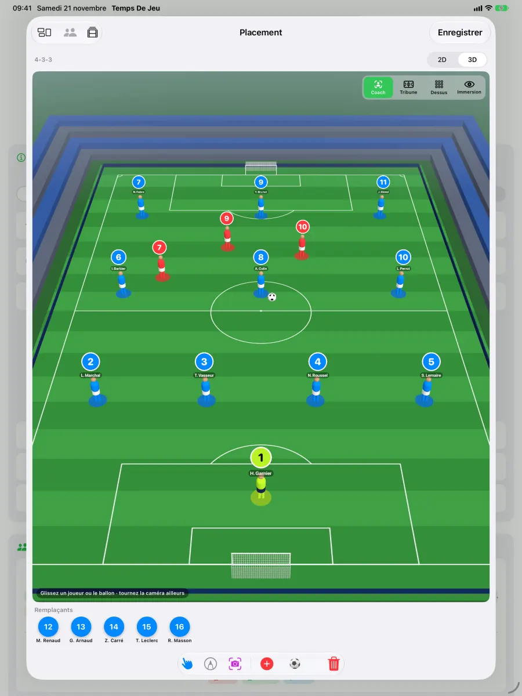
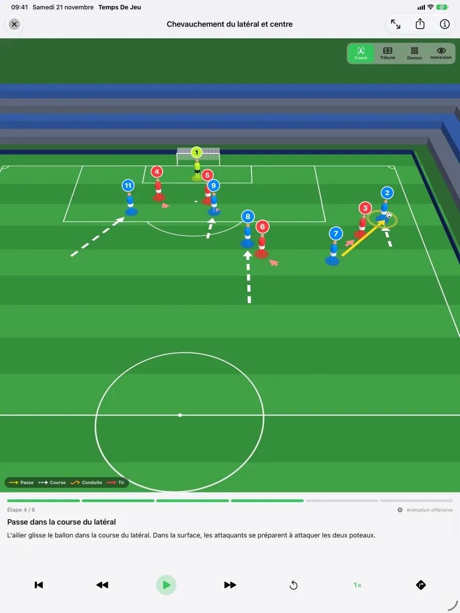
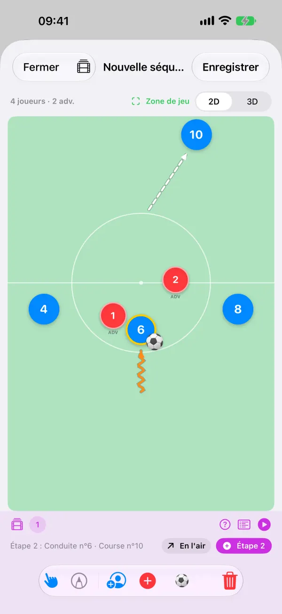
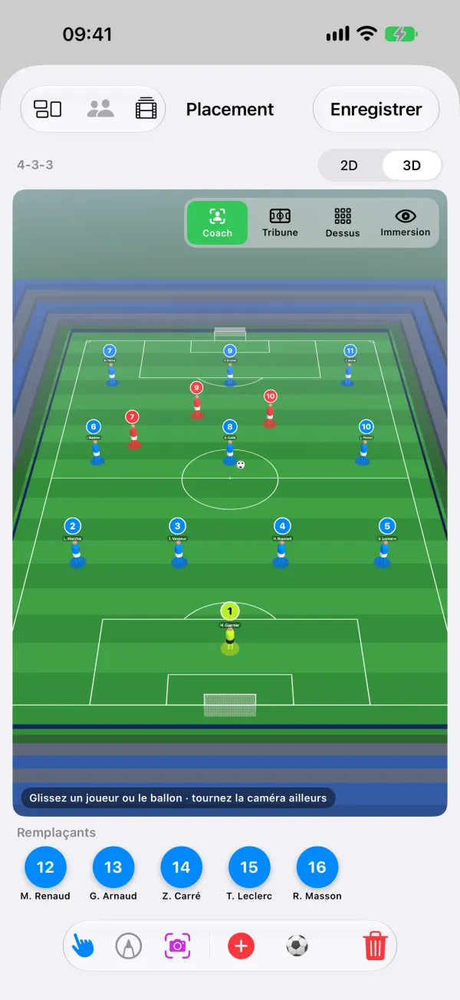
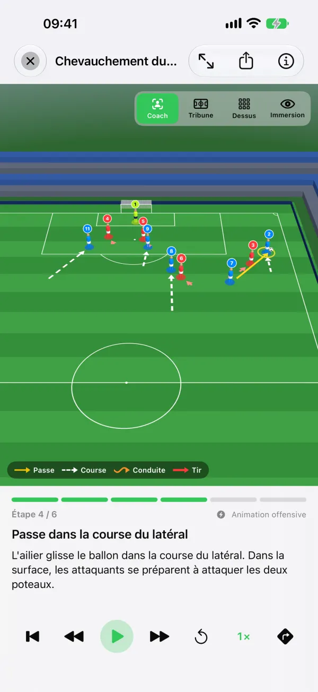
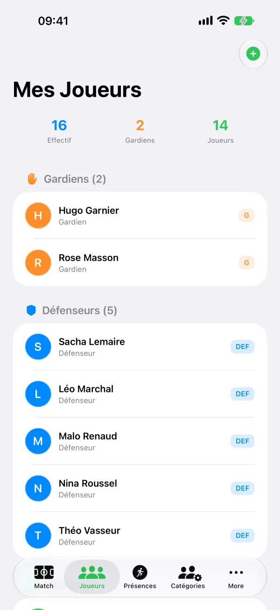

Tout le matériel
Joueurs, gardiens, ballons, plots, coupelles, piquets, mannequins, mini-buts, buts, zones en mètres, cerceaux, échelles, haies. On touche un outil, puis le terrain : l’outil reste actif.

Matchs, effectifs, entraînements et tactique en 3D. L’app des éducateurs de football amateur, sur iPhone et iPad.
5 matchs offerts · Atelier, séances et exercices 3D gratuits · sans compte ni publicité
Mise en place
Ballon récupéré au milieu : trois attaquants contre deux défenseurs qui reculent.
NouveauEntraînement
Posez le matériel, placez vos joueurs, ajoutez des étapes : les flèches se tracent toutes seules, et l’exercice se rejoue en 3D avec la consigne en sous-titre.
Démonstration fidèle à l’app : plein écran sur iPhone et iPad, le terrain pivote à l’horizontale quand il y gagne de la place.
Joueurs, gardiens, ballons, plots, coupelles, piquets, mannequins, mini-buts, buts, zones en mètres, cerceaux, échelles, haies. On touche un outil, puis le terrain : l’outil reste actif.
Pour les joueurs comme pour le matériel. Les raccourcis posent en un geste un carré, un rondo, un jeu réduit avec mini-buts ou un slalom.
« + Étape » copie la précédente. Déplacez un joueur : course. Le porteur : conduite. Le ballon sur un partenaire : passe. Dans le but : tir.
Votre exercice en 3D plein écran, joueurs en mouvement et consigne en sous-titre. Idéal à montrer aux joueurs avant la séance.
Même terrain, consigne différente : « 2 touches maximum », « but en une touche »… Annuler et rétablir à tout moment, enregistrement automatique.
Objectif, consignes et matériel à prévoir, calculé tout seul. Une fiche PDF prête pour le terrain ou le classeur du club.
NouveauSéances
Enchaînez vos exercices, en série ou en ateliers simultanés. L’app additionne le temps et le matériel, puis compose les équipes avec les joueurs présents ce jour-là.
Objectif
Conserver le ballon sous pression en trouvant la passe qui élimine les deux défenseurs.
Consignes
Matériel à prévoir calculé tout seul
Séance du mercredi · U13
75min
Matériel total
Équipes avec les 12 présents
Chasubles bleues
Chasubles orange
Tactique 3D
Ce sont les exercices de la bibliothèque de l’app, rejoués ici avec les mêmes données. Choisissez un exercice et une caméra, puis lancez la lecture.

Glissez pour tourner autour du terrain
Placement et séquences
Basculez la vue Placement en 3D : joueurs et ballon se déplacent du bout du doigt, sur un terrain que l’on regarde depuis le banc, la tribune, le ciel ou à hauteur de joueur.



Le jour du match
Temps de jeu de chaque joueur, arrêts chronométrés, temps additionnel calculé, buts, passes décisives, cartons et remplacements en un geste.
2–1
27:22
Temps additionnel +1:30
Arrêts de jeu
Fil du match
Équité du temps de jeu

Clubs à plusieurs équipes
L’équipe A choisit ses joueurs et partage les disponibles par iMessage. L’équipe B voit qui est déjà pris, choisit à son tour, et transmet à la C.
Chaque catégorie a un code à 6 caractères : les compositions importées arrivent toutes seules sur la bonne équipe.
Tout le reste
Une seule app pour toutes vos équipes, du U7 aux seniors. Vos données restent sur votre appareil.
11 types d’arrêts chronométrés (touche, corner, coup franc, penalty, blessure, VAR…). Temps additionnel calculé, prolongations 2 × 15 min.
Un indicateur vert, orange ou rouge vous alerte en direct si l’écart se creuse. Impossible d’oublier quelqu’un sur le banc.
Jaunes, doubles jaunes, rouges et blancs avec exclusion temporaire de 10 min et compte à rebours. Suspensions purgées.
Temps effectif, arrêts par type et par équipe, buteurs, passeurs, fautes par joueur et par période, récapitulatif en PDF.
Toutes vos équipes dans une app, base de joueurs partagée, badges de couleur pour les joueurs prêtés entre catégories.
Coachs, adjoints, arbitres, délégués, préparateurs… Rôles personnalisables, appel direct depuis l’app.
Pointage des entraînements, joueurs invités d’autres catégories, statistiques de présence, feuilles en PDF.
Un lien par WhatsApp, SMS ou iMessage : les joueurs répondent depuis n’importe quel téléphone, même Android.
Le prochain match ou entraînement sur l’écran d’accueil, avec les réponses au sondage.
Matchs et entraînements rangés par saison. Archivez et repartez de zéro sans rien perdre.
PDF, compositions (.tdj), matchs (.tdjm), exercices et tactiques (.tdjt). Import automatique chez le destinataire.
Aucun compte, aucune publicité, aucun traceur. Tout reste sur votre iPhone ou votre iPad et fonctionne hors ligne.
Captures


Support
Une question, un problème, une idée ? Réponse en général sous 48 heures.
bob.oulhen@gmail.com
Ouvrir un ticket sur GitHub
Vos suggestions font l’app
Onglet Présences, puis le bouton « Atelier » en haut à gauche. L’Atelier s’ouvre en plein écran avec trois onglets : Bibliothèque (les 12 exercices animés), Mes exercices et Séances.
Dans « Mes exercices », touchez « Nouvel exercice ». Posez le matériel et les joueurs (ou partez d’un raccourci), puis touchez « + Étape » : déplacez un joueur pour une course, le porteur pour une conduite, glissez le ballon sur un partenaire pour une passe. Les flèches se tracent seules. « Cinéma » rejoue le tout en 3D.
Onglet « Séances », « Nouvelle séance », puis « Ajouter un exercice ». Donnez une durée à chaque exercice : le temps total et le matériel se calculent, en série ou en ateliers simultanés. Les équipes se composent avec les joueurs présents, et la séance s’exporte en PDF.
Non. L’Atelier, les séances et la bibliothèque d’exercices 3D sont accessibles sans achat. Seuls les matchs au-delà des 5 premiers demandent Premium.
Onglet Match, « Placement », puis le sélecteur 2D / 3D en haut à droite. Faites glisser un joueur pour le déplacer et changez de caméra (Coach, Tribune, Dessus, Immersion).
Utilisez le bouton de partage de l’exercice : un fichier .tdjt part par Messages, AirDrop ou e-mail et s’ouvre directement dans Temps De Jeu chez le destinataire.
Ajoutez vos joueurs dans l’onglet Joueurs, puis dans l’onglet Match renseignez les équipes, touchez « Sélectionner les joueurs pour ce match », désignez les titulaires et démarrez le chrono.
C’est un achat unique, sans abonnement, géré par Apple. Il débloque les matchs illimités et se restaure sur tous vos appareils avec le même identifiant Apple (« Restaurer mes achats » dans Réglages et Exports).
Tout est enregistré sur votre appareil, sans compte ni serveur. Exercices et séances font partie de la sauvegarde complète, que vous pouvez exporter pour la garder ou la transférer.
Oui, entièrement. Internet n’est utile que pour l’achat Premium et pour recevoir les réponses aux sondages de disponibilité.
Ouvrez un entraînement et touchez « Sondage disponibilité ». Partagez le lien par WhatsApp, SMS ou iMessage : les joueurs répondent Présent, Absent ou Incertain depuis n’importe quel téléphone, puis « Appliquer aux présences » reporte les réponses.
Créez vos catégories (U13, Seniors…) dans l’onglet Catégories. Chacune a un code à 6 caractères à partager aux adjoints : les compositions importées arrivent alors sur la bonne équipe. L’équipe A partage ses disponibles à la B, qui voit les joueurs déjà retenus.
Il exclut le joueur 10 minutes. Un compte à rebours s’affiche pendant le match et une alerte prévient quand il peut revenir sur le terrain.
Maintenez le doigt sur l’écran d’accueil, touchez « + », cherchez Temps De Jeu et choisissez la taille. Maintenez le doigt sur le widget pour choisir la catégorie affichée.